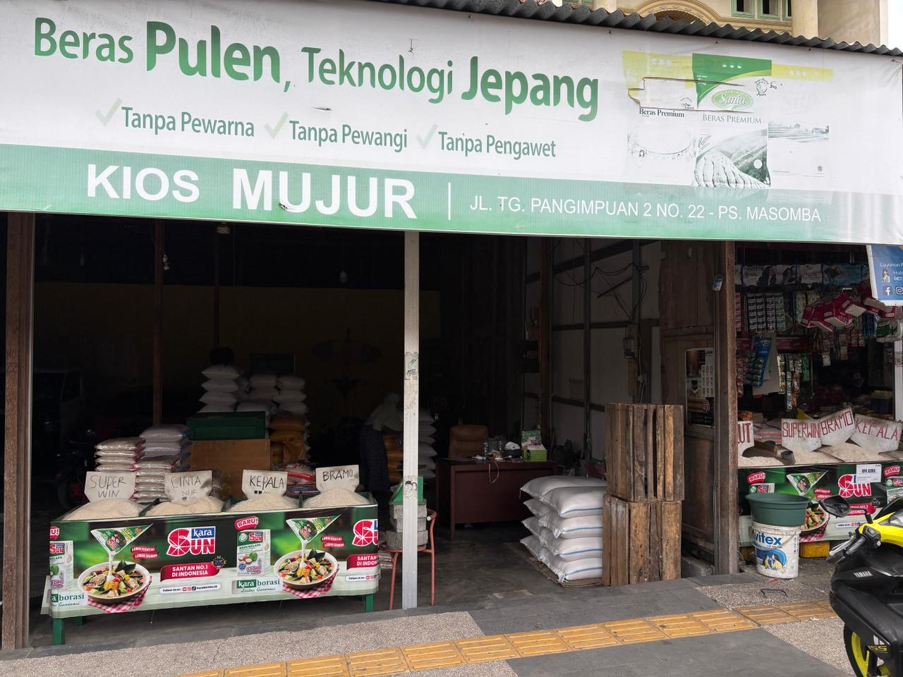

Beras Berkualitas
Kami menyediakan beras yang dipilih dengan memperhatikan kebersihan, tekstur, dan kebutuhan pelanggan.
Temukan berbagai jenis beras mulai dari kualitas medium hingga premium, Kami menjamin keaslian dan kesegaran rasa di setiap butirnya untuk kepuasan Anda.

TENTANG TOKO MUJURr
Kami menyediakan beras yang dipilih dengan memperhatikan kebersihan, tekstur, dan kebutuhan pelanggan.
Pelanggan dapat membeli beras dengan harga yang wajar untuk kebutuhan harian maupun pembelian rutin.
Kami siap membantu pelanggan memilih jenis beras yang paling sesuai dengan selera dan kebutuhan masak.
LAYANAN
Toko Mujur melayani pembelian beras untuk keluarga, pedagang makanan, rumah makan, dan pelanggan yang membutuhkan stok beras secara rutin. Dengan pilihan beras yang beragam, pelanggan dapat menyesuaikan pembelian berdasarkan kualitas, rasa nasi, dan anggaran.
Kami percaya bahwa beras yang baik menjadi bagian penting dari makanan sehari-hari. Karena itu, Toko Mujur berkomitmen untuk memberikan produk yang layak, pelayanan yang jelas, dan pengalaman belanja yang nyaman.
Alamat Dan Whatsapp
Alamat: Pasar Masomba Jl. Tj. Pangimpuan tengah No.22, Tatura Utara, Kec. Palu Sel., Kota Palu, Sulawesi Tengah 94111
Link Goggle mapsTelepon: 082194311111
Chat Whatsapp Kami